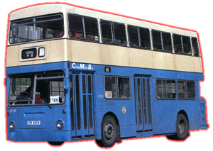

 |
車隊編號 Model 引擎 Engine 容積 Engine Capacity 波箱 Gearbox 車身 Body Build 體積 Volume 載客量 Passenger 服役年份 Year |
: XF (1 - 206) : Gardner 6LXB (150bhp) : 10.45 liters : Daimatic GB 486 : Park Royal : 9410L X 2500W X 4420H(mm) : U44 L29 S26 : 1980 - 1996 |
Daimler Fleetline (DMS)一共為數 207 部二手倫敦珍寶由中巴引入，中巴所購入的俗稱 "火柴盒" 巴士，全於倫敦運輸局退下，由於此局對此系巴士(DMS)有所不滿，導致一大批 DMS 只行走幾年便要退役，實在非常可惜，因此，大部份 DMS 都由另一買家叫 [Ensign] 的公司所購下，車子經過翻新後再轉售給其他公司，而香港亦因為正在鬧車荒關係，中巴和九巴都對此系車有興趣而各自買入。中巴所選購的，全數車身都由 Park Royal 設計和 Gardner 引擎，其中一部來到時已被中巴改為司機訓練巴士，與對面九記不同，車裡以 2+2 方式座椅排列，載客量又不高，乘坐比較舒適，所以較受乘客歡迎，唯一的缺點實在令人印象深刻，巴士在下雨天行走時，乘客和司機都要用著雨具來乘車，因為此車身漏水情況非常嚴重，所以下雨乘此車的人大多都會比較狼狽。此巴士多數以接駁地鐵站或海傍快線為主力，到了 1988 年，中巴將 XF 206 改裝高背座椅成為豪華巴士，車隊編號亦改為 FC 1，但此車卻用效不大，最終只作後備車用 ; 後來因為車子年紀漸大，載客量又不高，所以中巴續步減退此系巴士，直至 1996 年將之全部退役，此車行走時間比起英國長很多很多，都算是香港和英國之間其中一項有趣的歷史了。